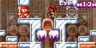

すばやい操作が要求されるマップです。
じゃあいこー！
| 4-4 黒
全体図。 |
攻略の流れ
|
まず、最下段の土偶を一つにまとめておきます。 |
|
| 上昇。 5,4,3,2,1の順に、反射板を切り替えていきます。 |
|
| アイテムゲット！ これで扉が開きます。 ジャンプボタンを離しましょう。 |
|
| ここが、このマップの最大の見せ場です。 下降しながら、1,2,3,4,5の順に、 反射板を切り替えていきましょう。 下降は、上昇よりも速度が速いので難しいです。 |
|
| 最下段で土偶に当たってしまう場合は、 下降中、適当に剣を空振りして、 着地のタイミングをずらしてください。 |
|
|  | つーわけで、クリアッスよ。 スクリーンショット取るのかなり苦労したッスよ。 |